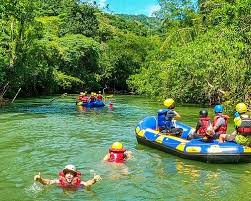

Corredeiras Verdes (Nível Iniciante)
Perfeito para famílias e primeira viagem. Uma introdução suave ao rafting com corredeiras leves (Classe I e II) combinadas com paisagens naturais deslumbrantes ao longo do rio.
Duração: 2 horas | Idade mínima: 8 anos